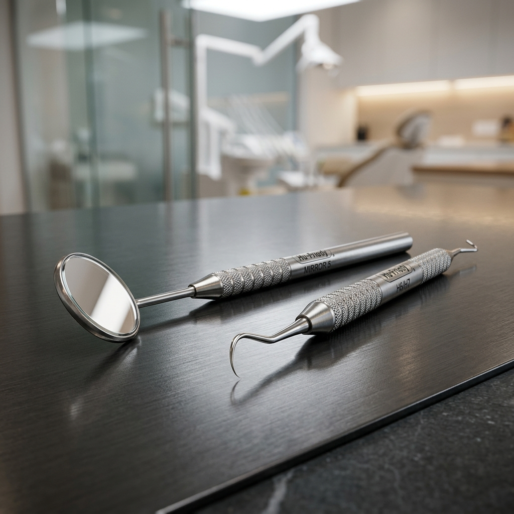

Muitos pacientes se perguntam: "Doutor, eu escovo os dentes 3 vezes ao dia e passo fio dental. Mesmo assim, preciso ir ao dentista só para fazer limpeza?"
A resposta é um sonoro SIM. A profilaxia (limpeza dental profissional) é o pilar fundamental da odontologia preventiva. Sem ela, até mesmo o sorriso mais bonito e bem cuidado em casa está suscetÃvel a problemas silenciosos e progressivos.
A diferença entre placa bacteriana e tártaro
Para entender a importância da limpeza de consultório, precisamos falar sobre os inimigos invisÃveis (e visÃveis) dos seus dentes:
- Placa Bacteriana (Biofilme): É uma pelÃcula pegajosa e incolor composta por bactérias que se forma sobre os dentes constantemente. Quando você escova e passa fio dental adequadamente, você remove a placa.
- Tártaro (Cálculo Dental): Se a placa bacteriana não for completamente removida em casa, ela calcifica (endurece) ao entrar em contato com os minerais da saliva. Uma vez formado, o tártaro só pode ser removido pelo dentista através da raspagem. Escovar com força não vai tirá-lo!
Os 3 principais motivos para fazer a limpeza profissional a cada 6 meses
1. Prevenção de Gengivite e Periodontite
O acúmulo de tártaro, especialmente próximo à linha da gengiva, causa inflamação, sangramento e mau hálito (gengivite). Se não tratada, evolui para a periodontite, que destrói o osso que sustenta o dente, levando à perda dentária e ao amolecimento dos dentes.
2. Diagnóstico Precoce de Cáries
A cárie em seu estágio inicial não dói. Durante a consulta de limpeza, o dentista avalia minuciosamente cada dente. É muito mais fácil (e barato) tratar uma microcárie do que esperar que ela atinja o nervo do dente e vire um doloroso tratamento de canal.
3. Remoção de Manchas Superficiais
A profilaxia inclui um polimento final com jato de bicarbonato e pastas especÃficas. Esse processo remove manchas superficiais causadas por café, chá, vinho e cigarro, devolvendo o brilho e a cor natural do seu sorriso, funcionando quase como um clareamento leve.
Há quanto tempo você não faz um Check-up?
Cuidar da prevenção é investir na saúde e poupar dores de cabeça no futuro. Agende sua profilaxia!
Ver Tratamentos Preventivos